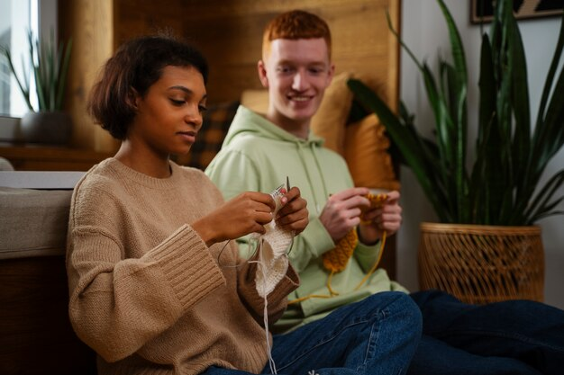
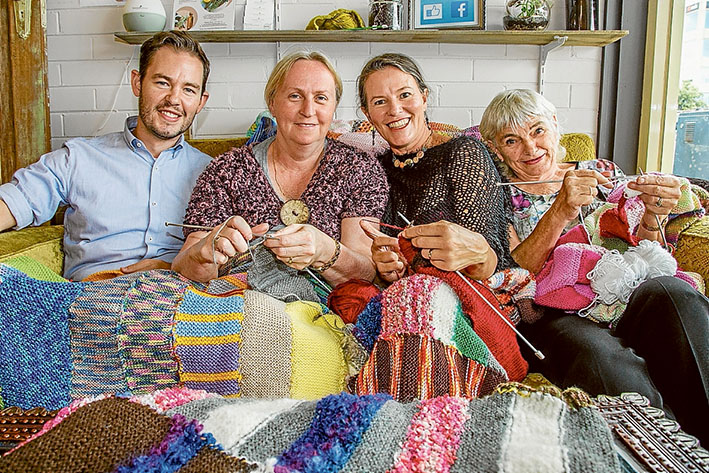

Tusen takk!
Heihei! Nå sitter jeg hjemme i sofaen og tenker på dagens strikkesamling.
Jeg blir så varm i hjertet av å se så mange møte opp! Jeg håper dere koste dere like mye som jeg gjorde, med gode samtaler om både strikking og alt annet. Håper å se dere igjen neste uke!

31. oktober, 2023
Hællæ
Hællæ! Åssen går'e æ? Jeg nyter sola på Sjusjøen, og sitter inntill hytteveggen med et glass rødt i hånda og strikker
på en Marius genser jeg skal gi til mannen min. Livet smiler. God helg!

28. oktober, 2023
Strikk, drikk og kos
Hei! Jeg hadde godgjengen på besøk på fredag, og vi hadde det kjempe koselig. Vi ga hverandre flere gode tips
og alle kom langt på prosjektene våre. Det må gjentas snarest!

19. oktober, 2023
God helg!
Hællæ! Nå er jeg på tur til Oslo for å besøke min kjære familie.
Dette er en tur jeg har gledet meg lenge til. Når jeg kommer frem skal jeg fortelle om den fantastiske uken jeg har hatt med strikkeklubben. Og en like fantastisk helg kommer det til å bli! God helg!!!

15. oktober, 2023
Ukens tema
Heihei fininger! Denne uken skal vi ha temauke. Dette er noe nytt jeg tester ut, så kom gjerne med tilbakemeldinger om hva dere synes.
Temaet blir skjerf! Dette er en gylden mulighet til å starte sitt førdste strikkeprosjekt, eller få et avbrekk fra et lanvarig annet strikkeprosjekt. Gleder meg til å se dere!

10. oktober, 2023
Nye strikkeoppskrifter
Heihei! DA har jeg lagt til nye strikkeoppskrifter. Du kan finne de ved å trykke på oppskrifter øvest på siden. Håper dere liker de!

28. oktober, 2023
Hei!
Hei! Da er jeg endelig tilbake til bloggingen.
Jeg har dessverre hatt det litt travelt i det sidte, så er ikke kommet så mange innlegg fra meg. MEN jeg har fått blitt kjent med så mange av dere fine strikkere, og gleder meg masse til tiden fremover!

20. oktober, 2023
Høst
Da var det nok en ny uke med strikking, og man begynner å kjenne på kroppen at høsten er på vei. Da er det ekstra godt å sitte inne med noe strikketøy. Jeg sitter nå her ved peisen, og stikker en genser i nydelige høstfarger!

25.august, 2023
Pirbadet
Hællæ! Åssen går'e æ? Idag har jeg tatt litt avbrekk fra strikkingen, slik at jeg fikk vært med noen kollegaer på pirbadet. Det var ovveraskende nok kjempegøy. Vi koste ogg masse både i bølgebassenget og i varmebassenget. Jeg foretrekker nok best varmebassenget. Ha en god uke videre!

17.august, 2023
Livsglede
Hei alle kjære lesere! I dag har vært en kjempestor dag.
Jeg har nemlig blitt tante. Dette er noe jeg har gledet meg til lenge. Som mange av dere vet, har jeg strikket en kjempesøt outfit til lillegull. Hhun ble såååå søt i den. Ha en kjempefin dag!

6. august, 2023
Mitt første blogginnnlegg
Heisann alle samme! Da har jeg bestemt meg for å lage en blogg på denne siden.
Her får dere innblikk i mitt liv, og hva som skjer i strikkeklubben. Håper dette er noe dere liker! Kom gjerne med tilbakemeldinger om hva dere vil jeg skal lage innlegg om

1.august, 2023